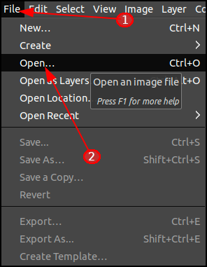

3 Ways to Convert a PDF to Images in Linux
No matter which computer you're using, the great thing about PDF files is that they can be viewed on any modern device. With that said, you might be wondering how to convert one to an image file using Linux.
As with most things Linux, there are a few perfectly suitable options for this task. Today, we'll look at two of the most common tools used for this purpose, as well as one that's a little more obscure.
Converting Your PDF to Images Using Pdftoppm
First released in 1996, the Portable Document Format to Portable Pixmap (Pdftoppm) converter is a powerful utility, expressly produced for the purpose of taking a PDF file as input and outputting a series of images. The benefit of using Pdftoppm is that - because it exists for this sole reason - you'll likely see higher-quality results than you would from multi-purpose solutions (such as GIMP). On top of that, this process will be exponentially quicker than manually producing images via any kind of graphical interface.
The first thing you'll want to do is make sure Pdftoppm is installed (it should come as standard with most modern Debian-based distributions). To check this, try typing the following into the terminal:
pdftoppm -vAnd you should see something like this:
If you don't, no need to fret. Just execute the following command:
sudo apt-get install pdftoppmInstallation should be fairly quick. Now, once you're ready to go, use the terminal to navigate to the directory where your PDF file resides. In my example, I'm working in my "~/Downloads" folder.
For the sake of keeping things orderly, I'm going to make a folder called "output". This is where Pdftoppm will automatically store the resulting images.
mkdir outputThen, I'm going to turn my PDF file into a series of PNG images with the following command:
pdftoppm -png -r 300 sample.pdf output/mypdfThis command might look complex, but the syntax is actually fairly straightforward. If we break it down, we can look at each component individually:
- The -png option: typing -png merely designates the desired output format of our resulting images. You could, just as easily, replace this with -tiff or -jpeg.
- The -r option: typing -r 300 specifies a Dots Per Inch (DPI) resolution of 300. A higher number will return higher quality results - however, you should note that file sizes will also increase accordingly.
- The filename: “sample.pdf” is just the name of the PDF source file I'm using. You should change this to match whichever file you are attempting to convert to an image (or a series of images).
- The output directory and prefix: “output/pdf” is actually two arguments. The first part ("output") refers to the folder I created in the previous step, and lets Pdftoppm know where to put my image files. The second part ("mypdf") will serve as the prefix for the final image files (so, in this case, they will be named "mypdf-1.png", "mypdf-2.png", etc).
And we can see the exported images in the “output” directory:
While it might initially seem like a more involved process to use the terminal for this task, the reality is that it actually expedites the process dramatically. This will become particularly evident once we get to how this process is achieved using GIMP.
Accordingly, if this is a task you're going to have to process more than once, you're going to spend exponentially less time converting files (using the terminal) in the long run. For a more comprehensive explanation of how to use the package, you can view the Pdftoppm manual here.
Convert Your PDF to Images Using GIMP
GIMP is a fantastic application, and it provides an easy-to-use visual interface through which you can easily manipulate your files. The benefit of converting your file this way is that you won't need to learn any terminal commands; the downside to this, as always, is that it requires far more manual effort and a significantly larger time investment.
If you haven't already installed GIMP, you can do so with the following command:
sudo apt-get install gimpOnce installed, you can easily launch it from the terminal by typing "gimp" (or you can use whichever launcher is installed on your system).
After the application has opened, click "File > Open", and then select your PDF file.
You’ll then be presented with the “Import from PDF” dialog box. You can simple click “Select All” (1) if the software hasn’t automatically selected all pages within the document’s range (2). Generally speaking, though, you shouldn’t need to do this.
If you're just converting a PDF to a single (or series of) images, you shouldn't need to touch the options for "Width", "Height", or "Resolution". Likewise, you can leave the "Use Anti-aliasing" option checked.
The reason this method is so time-consuming is because GIMP will import each separate page as a layer in the same image. This can become extremely cumbersome when working with a document longer than three or four pages.
Once the image is opened, you can click the eyeball icon to hide each layer (or page) you don't want to show up in your first exported image (to be clear, if the eye icon is visible next to a layer’s thumbnail image, it means it is visible).
You can then click "File" (1), "Export As" (2) and save the page as a separate image file.
Also, don't forget to expand the "Select File Type (By Extension") area and designate an appropriate file format for your results. If you're unsure, we'd recommend using the Portable Network Graphics (PNG) format, as it has excellent cross-compatibility, as well as extremely effective compression algorithms.
You should then repeat this process (of hiding/revealing layers) for each page you wish to export as a separate image. This is a fairly onerous process, and not one we'd recommend unless you're only working with a handful of pages.
Pdftocairo
Lastly, for a no-frills option that requires as few arguments as possible - but which still allows you to easily convert a PDF file to a series of images using the trusty ol' terminal - we have to mention pdftocairo.
There's a good chance it's already installed on your system. You can check by executing the following command:
pdftocairo -vThat should return something like this:
If it looks like it's not installed on your system, you can install the poppler-utils package as follows:
sudo apt-get install poppler-utilsFrom there, it's as easy as navigating to the directory of your source file, and executing the following command:
pdftocairo sample.pdf -png- The filename option: replace "sample.pdf" with the name of your PDF file.
- The file format option: feel free to switch the -png flag to -jpeg (pdftocairo actually supports a few of the slightly more esoteric image formats, and you can view the full list of options here).
You should then be able to see a series of output files (in my case, "sample-1.png", "sample-2.png").
Note: There also exists another somewhat-popular image editing tool called ImageMagick. If none of these options are suitable for you, you might want to check that out (it also provides a command-line interface); however, I experienced issues when trying to access PDF files using it, and found the three solutions laid out in this article to be far less problematic. Your mileage may vary, though!